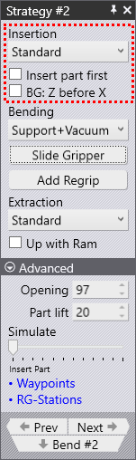
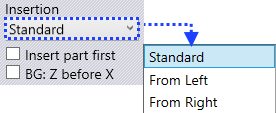
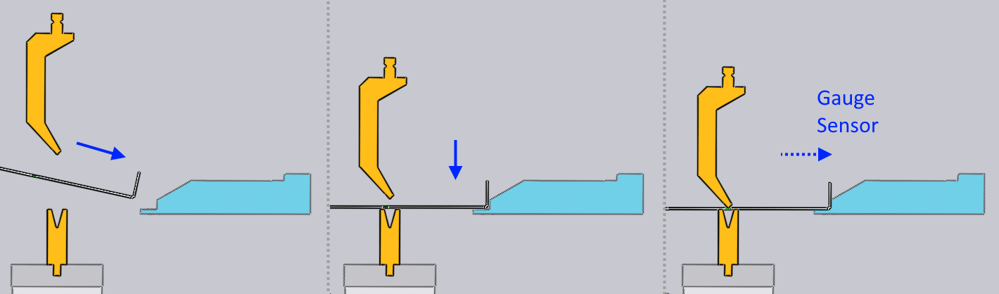

Insertion

The first section of the Robotic Strategy panel controls how the part is inserted into the machine before clamping and bending.
Insert direction

The Insertion list lets you choose between a standard insertion, where the part is inserted from the front, straight into the machine or a strategy where the part is slid in from the left or the right of the punch/die station.
When the part has an already bent profile that needs to go into the machine, it may be difficult to get enough of a ram opening to get the part in without it colliding with the punch or die. Even when the opening may look sufficient in the simulation, a collision can occur because the part will droop in real life, especially if the overhang from the gripping point is large.
For such situations, inserting from the left or right will be useful. Here’s a couple of images showing a part being inserted from the left. Note that the beam opening in this example is insufficient to being in the part from the front, and we need to use one of these insertion directions.

Insert part first
The normal insert operation works like this:

-
The gauge is positioned a few mm closer to the bend line than is required for gauging the part.
-
The part is lowered into position a few mm in front of the gauge.
-
The robot pushes the part back against the gauge until the contact sensors in the gauge engage and indicate that the part is correctly positioned. Then the bending cycle begins.
Sometimes, if the part has a downward facing flange on which the gauging must happen, this is difficult - the flange would collide with the gauge as the part is being lowered into position. For these situations, FluxRobot CAM will automatically use the Insert part first strategy, which looks like this:

-
The part is inserted into the machine, raised so that the down-hanging flange clears the die.
-
The part is lowered over the die, but positioned a few mm retracted back from the final bending position.
-
The gauge moves forward, again a few mm closer to the bend-line than is required for gauging the part.
-
The robot now pushes back the part a few mm until the gauge contact sensors engage, and the bending then happens.
This strategy is automatically selected by FluxRobot CAM when required, but selecting this checkbox allows you to override the default.
BG: Z before X
The BG: Z before X strategy creates a safer movement path for the backgauge in situations where the gauging position for this bend is closer to the bend line than the gauging position of the previous bend. Normally, the gauges will freely move from the previous gauging position to the new one once the bend step change happens.
When this checkbox is selected, the gauges first move in the Z direction until they are directly aligned behind their final positions. After that, they advance forward in the X direction to get into position, avoiding a potential collision that may be caused by a diagonal movement.
This strategy is selected automatically by FluxRobot CAM where needed, but can be overridden here.